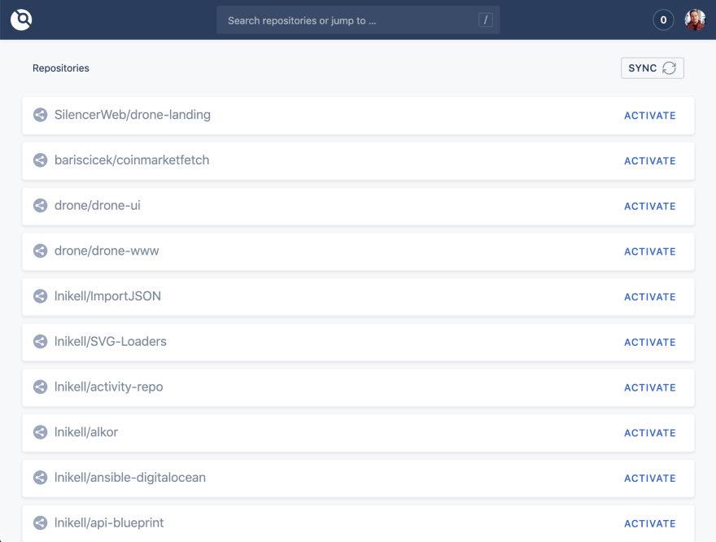

مقدمه
بعید می دونم که کسی به عنوان یک sysadmin یا devops مشغول به کار باشد و با واژه CI/CD و مفهوم آن آشنایی نداشته باشد.
در واقع مفاهیمی که در دل devops زاده شده اند برای توسعه و راه اندازی هرچه بهتر و سریعتر برنامه ها در بوده اند.
برای درک بهتر سرویس drone لازم است تا با مفاهیمی آشنا باشیم. پس با این مفاهیم شروع می کنیم
واژگان
git
برنامه ای کاربردی و پر استفاده برای کنترل و مدیریت کدهای برنامه بین اعضاء یک تیم برنامه نویسی است.
CI/CD
به فرایندی که با هماهنگی بین توسعه دهنده برنامه و مدیر سیستمی که قرار است برنامه روی ان اجرا شود، پیاده سازی می گردد. این فرایند کاملا سیستمی و بدون دخالت انسان انجام می شود.
- CI: continuous integration
- CD: continuous delivery/deployment
معمولا این فرایند به گونه ای دیده می شود که گام های تصویر زیر را انجام دهد:
ابزار CI/CD
ابزارهای 'CI/CD' برای کمک به تیم توسعه و تیم زیرساخت برای طی فرایند توسعه برنامه، انتقا و اجرای نهایی آن در بستر مورد نظر می باشد. از جمله این ابزارها می توان موارد زیر را نام برد:
- jenkins
- drone
- gitlab-ci
- circle-ci
- travis ci
چرا Drone CI
در بین ابزارهایی که در بالا ذکر شدند، در این نوشته قصد داریم تا درباره Drone CI صحبت کنیم.
یکی از ویژگی های این ابزار، انجام مراحل Ci در قالب ایمیج های داکر می باشد. به طور مثال، ممکن برنامه شما
از روند گیت مشخصی پیروی کنه که در آن زمانی پروژه باید به اجرای نهایی یا تجاری رود که توسعه دهنده روی برنچ مستر پوش و یک تگ یا نسخه بزند، در مرحله بعد باید
کدهای برنامه build شوند، سپس تست های مد نظر و لازم روی آن کدها اجرا شوند، در صورتی که مشکلی نبود آن نسخه
نهایی روی سرور های نهایی یا تجاری ارسال، جایگزین نسخه قبلی و اجرا شوند.
پس همانطور که بیان شد، تمامی مراحل بالا در قالب یک یا چند کانتینر در داکر (خود drone آن کانتینر ها را ایجاد، مدیریت می کند)
اجرا خواهند شد
نصب سرور
نصب drone کار بسیار راحت و ساده ای می باشد. برای انجام آن کافی هست تا کانتینر آن را اجرا کنید. برای اجرا
کافی هست فقط روی سروری که روی آن سرویس docker-engin وجود داشته باشد، یک فایل docker-compose.yml ایجاد
و آن را اجرا نماید:
version: "3.5"
services:
drone-server:
image: drone:1
container_name: drone-server
ports:
- 8081:80
environment:
DRONE_SERVER_HOST: drone.ci
DRONE_SERVER_PROTO: http
DRONE_RPC_SECRET: 7cd19b43db8d8b9ffg55048c57ecf9fc
DRONE_GITLAB_CLIENT_SECRET: ${GITLAB_CLIENT_SECRET}
DRONE_GITLAB_CLIENT_ID: ${GITLAB_CLIENT_ID}
DRONE_GITLAB_SERVER: ${GITLAB_SERVER}
DRONE_DATABASE_DRIVER: "mysql"
DRONE_DATABASE_DATASOURCE: "usr_drone:123456321@tcp(127.0.0.1:3306)/drone?parseTime=true"
volumes:
- ./db/dronesrv:/data
depends_on:
- mysql_db
mysql_db:
image: mariadb:10.3
restart: always
ports:
- 3306:3306
environment:
MYSQL_ROOT_PASSWORD: p@ssw0rd
MYSQL_DATABASE: drone
MYSQL_USER: usr_drone
MYSQL_PASSWORD: 123456321
volumes:
- ./db/dronesrv:/var/lib/mysql
نکته این که در این سناریو از دیتابیس mariadb برای نگهداری اطلاعات drone استفاده می شود. در نهایت با دستور
زیر اجرا می شود:
docker-compose up -d
دسترسی به سرور
زمانی که سرور را راه اندازی می کنید، یک پنل در آدرس تنظیم شده، برای استفاده مهیا می گردد که از طریق آدرس
تنظیمی در پارامترهای سرور قابل دسترس بوده و ریپوهایی که کاربر شما در گیت لب به آن ها دسترسی دارد، نمایش
داده و یک سری امکانات مدیریت برای drone ci را در اختیار شما قرار می دهد.

نصب agent
این سرویس صرفا از سرور به طور مستمر در حال سوال پرسیدن هست تا کارهای قابل انجام، را روی خودش دریافت و شروع
به انجام آنها کند. agent یا runner دارای انواع مختلفی به ترتیب زیر، در drone هستند:
- Docker
- Kubernetes
- Exec
- SSH
- Digital Ocean
- Macstadium
در این سناریو ما از Docker runner استفاده می کنیم. برای این مهم در یک فایل docker-compose.ymlموارد
زیر را ذخیره و اجرا می کنیم.
version: "3.5"
services:
drone-agent:
image: drone-runner-docker:1
container_name: dron-agent
depends_on:
- drone-server
volumes:
- /var/run/docker.sock:/var/run/docker.sock
- ./dockerconfig.json:/root/.docker/config.json:ro
ports:
- 3000:3000
environment:
DRONE_RPC_PROTO: drone.ci
DRONE_RPC_HOST: http
DRONE_RPC_SECRET: 7cd19b43db8d8b9ffg55048c57ecf9fc
DRONE_RUNNER_CAPACITY: 5
DRONE_RUNNER_NAME: runn-drone
نتیجه گیری
تا اینجا با هم یک سری مفاهیم اولیه CI/CD و DevOps آشنا شدیم و بعد از آن سرور drone را در بستر
Docker برای Gitlab راه اندازی کردیم و سپس اجرا کننده آن را نیز با Docker و روی Docker راه اندازی شد.
در گام بعدی قصد داریم تا به توضیح فایل کنترل کننده CI/CD برای drone بپردازیم